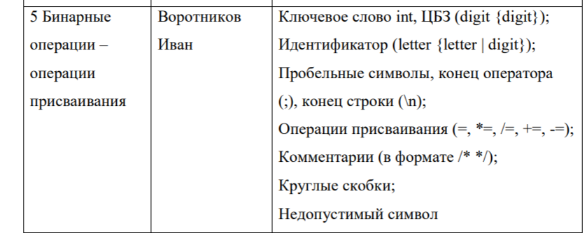
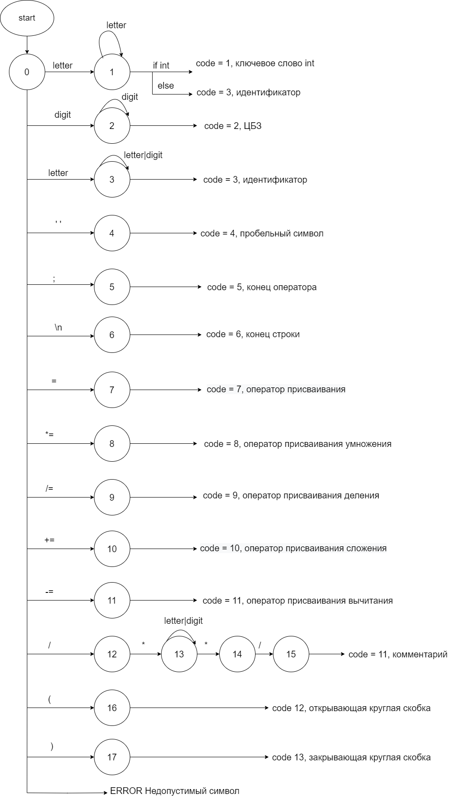
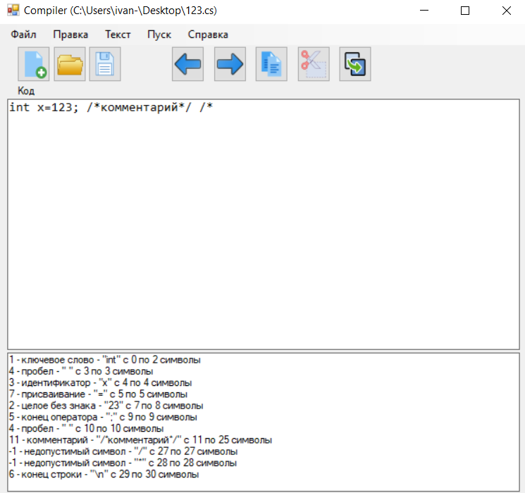
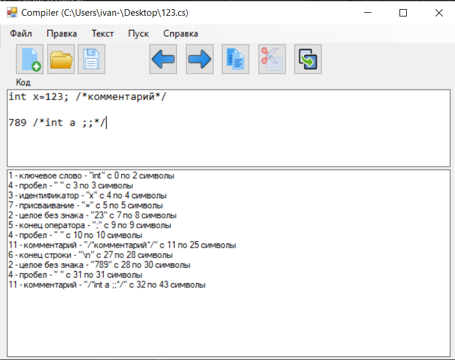

Ссылка на гитхаб: https://github.com/Pirozh-ok/Compiler
Задание на лабораторную работу
1. Спроектировать диаграмму состояний сканера (пример диаграммы представлен на рисунке 1 - см. файл "Варианты заданий для ЛР3").
2. Разработать лексический анализатор, позволяющий выделить в тексте лексемы, иные символы считать недопустимыми (выводить ошибку).
Входные данные - строка (текст программного кода).
Выходные данные - последовательность условных кодов, описывающих структуру разбираемого текста с указанием места положения и типа ("число", "идентификатор", "знак", "недопустимый символ" и т.д.). Например, для строки "int x=123;":
14 - ключевое слово - int - с 1 по 3 символ
11 - разделитель - (пробел) - с 4 по 4 символ
2 - идентификатор - x - с 5 по 5 символ
10 - оператор присваивания - = - с 6 по 6 символ
1 - целое без знака - 123 - с 7 по 9 символ
16 - конец оператора - ; - с 10 по 10 символ
Встроить сканер в ранее разработанный интерфейс текстового редактора. Учесть, что текст для разбора может состоять из множества строк.
В раздел Справка вставить текст задания, типичные лексемы для своего варианта, спроектированный лексический автомат и тестовые примеры.
Типичные лексемы(5 вариант)

Ключевое слово, ЦБЗ, идентификатор, пробел, конец оператора (;), конец строки(\n), операции присваивания (=, *=, /=, +=, -=), комментарии, скобки, недопустимый символ
Диаграмма состояний сканера

Тестирование работы программы

